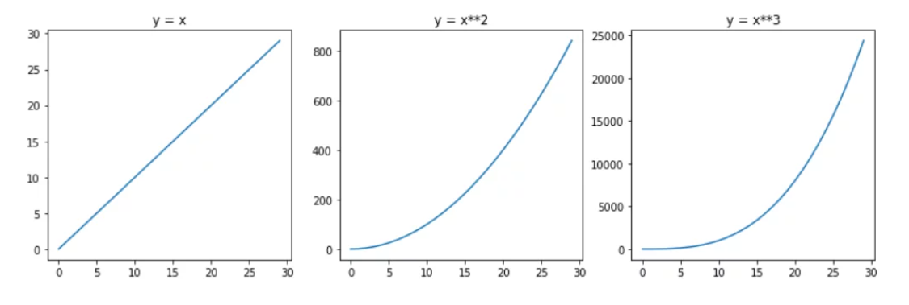
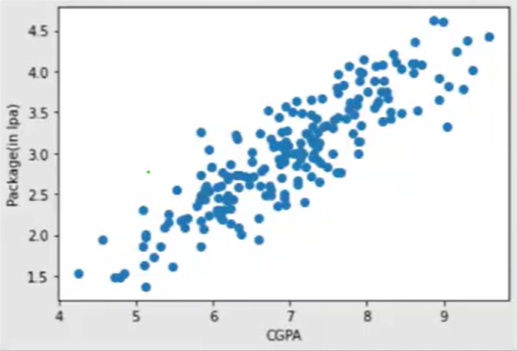
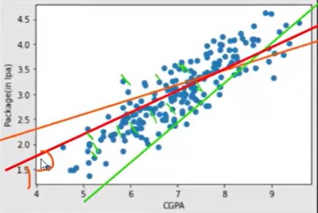
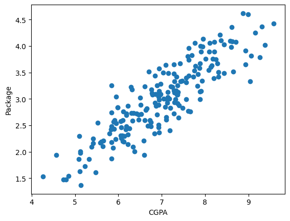
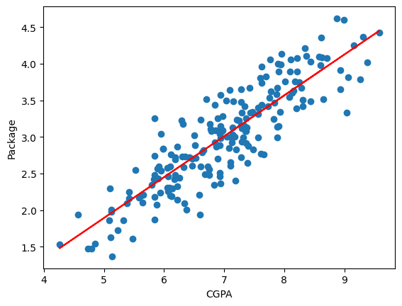

import pandas as pd
import numpy as np
import matplotlib.pyplot as pltLinear Regression
An introductory guide to linear regression concepts followed by a hands-on Python implementation using scikit-learn to predict salary packages based on student CGPA.
Introduction
This is a supervised regression Model. It is used to model the relationship between a single independent variable (X) and a dependent variable (Y) by fitting a straight line to the observed data.
Why Simple Linear Regression is at the beginning and why not other models?
1. Easy to understand
2. It can be used to understand other models as well.
Types of Linear Regression
- Simple Linear Regression
- Multiple Linear Regression
- Polynomial Linear Regression
- Regularized Linear Regression (Ridge, Lasso)
Simple Linear Regression
Simple Linear Regression only works on only the datasets with one input feature and one output feature. Here is an example.
| CGPA | Salary(in lakhs) |
|---|---|
| 7.5 | 8.5 |
| 8.0 | 9.0 |
| 8.5 | 9.5 |
| 9.0 | 10.0 |
| 9.5 | 10.5 |
But this model is too simple for the real world datasets. So, we will use the Multiple Linear Regression model.
Multiple Linear Regression
Multiple Linear Regression works on datasets with more than one input feature and one output feature. Here is an example.
| CGPA | Experience(in years) | Degree | Salary(in lakhs) |
|---|---|---|---|
| 7.5 | 2 | Bachelors | 8.5 |
| 8.0 | 3 | Masters | 9.0 |
| 8.5 | 4 | PhD | 9.5 |
| 9.0 | 5 | Bachelors | 10.0 |
Here CGPA, Experience and Degree are the input features and Salary is the output feature.
Polynomial Linear Regression
Polynomial Linear Regression is a type of linear regression where the relationship between the independent variable and the dependent variable is modeled as an nth degree polynomial. The graph of a polynomial regression is not a straight line, it is a curve. Here is an example.

Note: Linear regression is just a first-degree polynomial. Polynomial regression uses higher-degree polynomials. Both of them are linear models, but the first results in a straight line, the latter gives you a curved line.

Linear regression will try to fit a straight line through the data points. This graph is highly related to the real world datasets.
Equation of Simple Linear Regression
\[y = mx + c\]
Where:
- y is the dependent variable (output)
- x is the independent variable (input)
- m is the slope of the line (coefficient)
- c is the y-intercept (constant)
We try to find the best values of m and c that minimize the difference between the predicted values and the actual values.
For simple linear regression, there is only one input feature, but when there are two input features, the line becomes a plane and the equation becomes:
\[y = m_1x_1 + m_2x_2 + c\]
Where:
- x_1 and x_2 are the independent variables (input features)
- m_1 and m_2 are the coefficients for the respective input features
- c is the y-intercept (constant)
For multiple linear regression with n input features, the equation becomes:
\[y = m_1x_1 + m_2x_2 + ... + m_nx_n + c\]
Where:
- x_1, x_2, …, x_n are the independent variables (input features)
- m_1, m_2, …, m_n are the coefficients
- c is the y-intercept (constant)
While model training, we try to reduce the error rate and increase the accuracy rate. Linear regression draws the best fit line applying so many iterations. By the iterations, the linear regression model tries to reduce the error and find the best fit line.

Now we will try to implement the simple linear regression model in practical.
Practical Implementation of Simple Linear Regression
We will use placement dataset to train a simple linear regression model. You can download the dataset from here.
df = pd.read_csv('placement.csv')
df.head()| cgpa | package | |
|---|---|---|
| 0 | 6.89 | 3.26 |
| 1 | 5.12 | 1.98 |
| 2 | 7.82 | 3.25 |
| 3 | 7.42 | 3.67 |
| 4 | 6.94 | 3.57 |
plt.scatter(df['cgpa'], df['package'])
plt.xlabel('CGPA')
plt.ylabel('Package')
plt.show()
X = df.drop(columns=['package'])
y = df['package']
from sklearn.model_selection import train_test_split
X_train, X_test, y_train, y_test = train_test_split(X, y, test_size=0.2, random_state=2)from sklearn.linear_model import LinearRegression
lr = LinearRegression()
lr.fit(X_train, y_train)LinearRegression()In a Jupyter environment, please rerun this cell to show the HTML representation or trust the notebook.
On GitHub, the HTML representation is unable to render, please try loading this page with nbviewer.org.
Parameters
X_test.head()| cgpa | |
|---|---|
| 112 | 8.58 |
| 29 | 7.15 |
| 182 | 5.88 |
| 199 | 6.22 |
| 193 | 4.57 |
y_test.head()112 4.10
29 3.49
182 2.08
199 2.33
193 1.94
Name: package, dtype: float64Now we will try to predict on test data.
lr.predict(X_test.iloc[[0]])array([3.89111601])Look carefully, the prediction is not correct. The model predicted 3.89 for the first row, but the actual value is 4.10. This is because the dataset is small, and the preprocessing and feature engineering steps are not done.
plt.scatter(df['cgpa'], df['package'])
plt.plot(X_train, lr.predict(X_train), color='red')
plt.xlabel('CGPA')
plt.ylabel('Package')
plt.show()
This is the best fit line for the data. If we want to see the slope and intercept, we can use the following code:
m = lr.coef_
b = lr.intercept_
m, b(array([0.55795197]), np.float64(-0.8961119222429144))Now we have m and b we can use them to predict the value of y for any given value of x using the formula:
\[ y = mx + b \]
x = 8.58
y = m * x + b
yarray([3.89111601])We can use the predict function to make prediction on x. For this we need to convert x to a dataframe.
new_data = pd.DataFrame([[x]], columns=['cgpa'])
lr.predict(new_data)array([3.89111601])Look they are same.
In machine learning, we don’t call m and b as intercept and slope. We call them as weight and bias respectively.